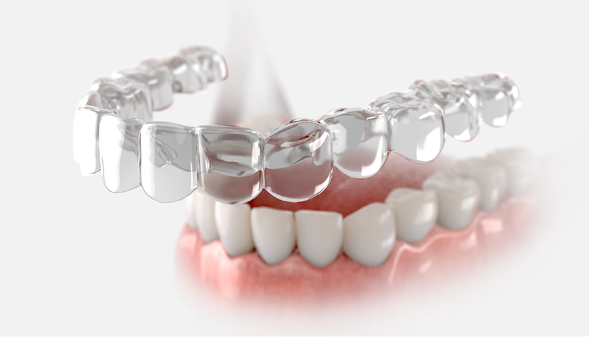
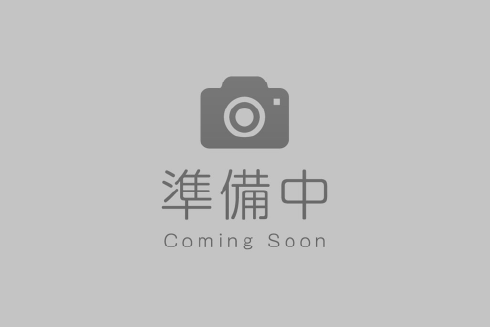
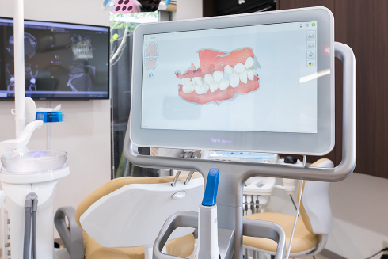
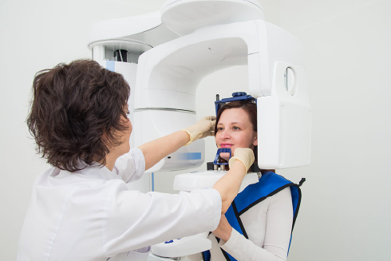
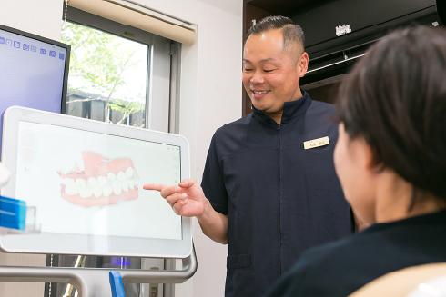
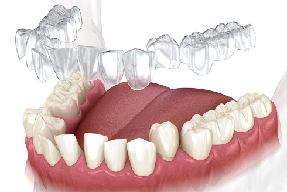
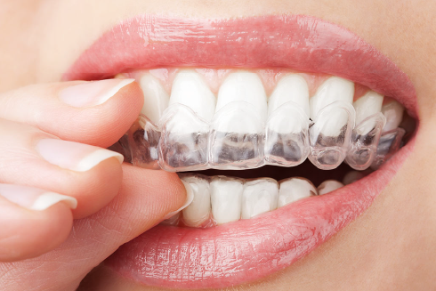

マウスピース型矯正装置(インビザライン)による治療
マウスピース型矯正装置による矯正治療とは、オーダーメイドのマウスピースをつけて、歯を少しずつ動かしていく矯正方法です。
透明で目立ちにくく、食事や歯磨きの時には取り外すことができ、普段と変わらない食生活を送ることができます。
マウスピースは洗ったり除菌もできるため、衛生的にも安心です。
当院で使用するマウスピース型矯正装置(インビザライン)は、歯科先進国のアメリカで誕生し、全世界100ヵ国以上で導入されています。
※完成物薬機法対象外の矯正歯科装置であり、医薬品副作用被害救済制度の対象外となる場合があります。
見た目が気になって矯正治療を悩んでいた方へ！
こんな方におすすめです
- 人前で話す機会が多い社会人の方
- 結婚式のような、大切なイベントを控えた方
- 矯正治療をしていることを知られたくない方
MERIT
インビザラインの特徴・メリット
| ワイヤー表面 | インビザライン | |
|---|---|---|
| 費用 |
○ 00～00万円程度 |
○ 00～00万円前後 |
| 適用症例 |
○ ほとんどすべての症例に対応 |
△ 重度の不正咬合は適用不可 |
| 見た目 |
× 遠目でわかるくらい装置は目立つ |
○ 透明でほとんどわからない |
| 取り外し |
× 不可 |
○ 可能 |
| 歯磨き |
△ 食べ物がつまりやすく、手間がかかる |
◎ 取り外して通常の歯磨きが可能 |
| 付け心地 |
× 唇に当たる、痛み・違和感あり |
○ フィット感あり、違和感や痛みが少ない |
| 金属アレルギー |
× 金属のワイヤーやブラケットを使用 |
○ 金属を使用しない |
OUR INVISALIGN
当院のインビザライン
インビザラインの種類

※完成物薬機法対象外の矯正歯科装置であり、医薬品副作用被害救済制度の対象外となる場合があります。
メーカー認定の歯科医師が施術を担当
インビザラインを用いた矯正治療は、メーカー所定の研修を修了した者でなくては行うことができません。当院では認定を受けた歯科医師が治療にあたりますので、ご安心ください。

FLOW
インビザライン治療の流れ
STEP
1

STEP
2
STEP
3

STEP
4

STEP
5

STEP
6

Copyright 2021 きらり歯科クリニック